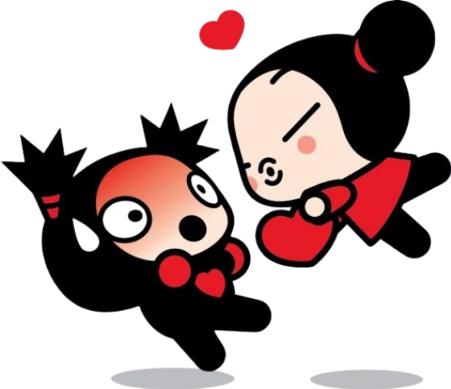

Curiosidades da Pucca e do Haru!

- O nome "Pucca" vem de uma expressão do dialeto coreano relacionada à frase "Posso te dar um beijo?",
o que combina perfeitamente com a personalidade dela
- Ela nasceu em 7 de julho e tem entre 10 e 11 anos, dependendo da fase da série
- Apesar de parecer apenas uma menina apaixonada, ela é, na verdade, uma das personagens mais poderosas do desenho.
Já correu pelo oceano, criou tempestades e derrotou ninjas experientes com facilidade
- A Pucca quase nunca fala. Ela se comunica principalmente com expressões, risadas e pequenos sons. Isso acabou virando
uma das marcas mais famosas da personagem.Ela trabalha como entregadora no restaurante dos tios, o Goh-Rong,
usando sua famosa motoneta vermelha.
- Ela também é muito talentosa com música e já mostrou ter uma ótima voz para cantar em alguns episódios
- O desenho começou em 2000 como pequenos cartões animados em Flash na internet, antes de virar uma série de TV.
- A Pucca foi, durante vários anos, uma das personagens coreanas mais populares internacionalmente.
- Garu é cerca de um ano mais velho que a Pucca, tendo 12 anos na maior parte das versões.
- Seu aniversário é em 2 de dezembro
- Ele fez um voto de silêncio, por isso quase nunca fala, assim como a Pucca
- O sonho dele é se tornar o maior ninja do mundo, e é justamente por estar tão focado em seu treinamento que
ele costuma fugir das demonstrações de carinho da Pucca
- Embora pareça frio, ele já salvou a Pucca diversas vezes e demonstra se importar muito com ela em vários episódios
- Em algumas versões da franquia, especialmente nos curtas originais e em Pucca: Love Recipe, fica mais claro que ele
também tem sentimentos por ela, mas é muito tímido para demonstrá-los.
- A história de fundo do Garu é mais séria do que parece. Algumas mídias da franquia mostram que ele perdeu o pai
quando era pequeno, o que ajudou a moldar sua personalidade reservada e sua determinação como ninja
Curiosidades sobre os dois juntos 💕

- Nos curtas originais da internet, Pucca e Garu são retratados mais como um casal tímido e engraçado do que como
uma relação de perseguição constante
- Em várias cenas, Garu fica corado quando alguém chama a Pucca de sua namorada, mas raramente a contradiz.
- Os dois quase nunca falam, então a relação deles é construída principalmente por expressões faciais e linguagem corporal.
- Eles se complementam bastante: a Pucca é extremamente expressiva e impulsiva, enquanto o Garu é calmo, reservado
e disciplinado
- Apesar de passarem boa parte da série correndo um atrás do outro, em momentos importantes eles sempre acabam se ajudando
e protegendo
- Muitos fãs consideram que a versão de Pucca: Love Recipe mostrou o relacionamento deles de forma mais equilibrada e deixou
mais evidente que existe carinho dos dois lados.
- O contraste entre "menina extremamente apaixonada" e "ninja tímido e sério" foi justamente o que tornou o casal tão popular
no mundo todo
Voltar para a página inicial